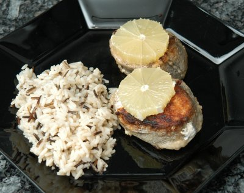

| Zutaten für 4 Personen: | |
| 4 Tranchen | Seehecht von je 180g |
| wenig | Mehl |
| Salz | |
| Pfeffer | |
| 60 g | Fett |
| 1 | Zitrone |
| wenig | Zitronensaft |
| 1 Tl | Dill, gehackt |
| 1 Tl | Petersilie, gehackt |
| 40 g | Butter |
Den Fisch mit Salz, Pfeffer und Zitronensaft marinieren und ca. 20 Minuten stehen lassen.
Beilage zubereiten, so dass Fisch und Beilage zum gleichen Zeitpunkt fertig werden.
Dann in Mehl wenden und beidseitig in heissem Fett goldgelb braten.
Butter stark erhitzen.
Den Fisch dann auf einer vorgewärmten Platte anrichten, mit Zitronenscheiben belegen, die fein gehackten Kräuter darüber streuen und mit schäumend-heisser Butter übergiessen.
Fisch-Rezeptbroschüre von der Migros
Getestet am 19.9.1998 von Richard Eigenmann: Das Resultat war ganz überzeugend. Statt einer grossen Tranche erhielt ich vom Fischhändler viele kleine. War auch gut so, so gab es keine Resten von der Zitrone... Die viele Butter ist bestimmt nichts für die Linie aber mit Wildreis als Beilage schmeckte das Gericht ganz gut!
Habe das Gericht am 10.1.2010 für das Foto erneut zubereitet. Den Hecht im Laden zu finden war gar nicht so einfach. Im St. Anahof wurde ich fündig. Die reine Buttersauce habe ich mich wiederum nicht zu machen getraut. Schmeckt sicher toll. War immer noch ganz OK auch wenn der Hecht doch eher viele Gräten hat. RE
@LINKBACK_TAG@ @WAKELOCK@